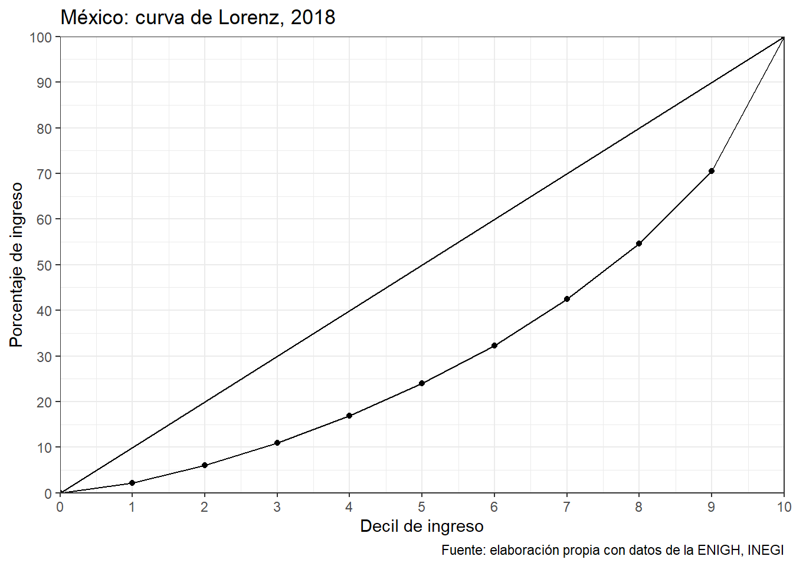

La Encuesta Nacional de Ingresos y Gastos de los Hogares (ENIGH) es una encuesta que se publica cada dos años. Su objetivo es proporcionar un panorama estadístico del comportamiento de los ingresos y gastos de los hogares en cuanto a su monto, procedencia y distribución; adicionalmente, ofrece información sobre las características ocupacionales y sociodemográficas de los integrantes del hogar, así como las características de la infraestructura de la vivienda y el equipamiento del hogar.
Uno de sus principales usos es el que le da el Coneval, pues a partir de la ENIGH se realizan las mediciones de pobreza multidimensional. Si quieres ver cómo hace el Coneval los cálculos en R (y otros programas estadísticos) puedes consultarlos aquí.
Actualmente la puedes descargar entrando al sitio del INEGI, y siguiendo la ruta Datos > Programas > Encuestas en hogares > Regulares > ENIGH > Nueva serie > Microdatos > concentradohogar. Ahí también encontrarás los resultados simplificados que publica el INEGI y, además de los cuestionarios que realizan, hay un útil manual que explica cada una de las variables que aparecen en la ENIGH (que te recomiendo tener siempre a la mano).
Aquí usaré la versión de 2018 en formato .csv, la más reciente a la fecha, la cual he subido a mi sitio de github para que sea más fácil replicar todo.
ENIGH <- read.csv("https://raw.githubusercontent.com/e-maruri/e-maruri.github.io/master/Bases/ENIGH_concentradohogar_2018.csv")
# Para más rápido siguiendo la ruta:
# ENIGH <- read.csv("Bases/ENIGH_concentradohogar_2018.csv")Uno de los elementos más importantes de la ENIGH es el factor de expansión, llamado factor en la base de datos, pues cada observación representa a otras viviendas y personas de condiciones socioeconómicas similares, por lo que el factor de expansión constituye el peso que se le da a cada unidad muestral para generalizar los resultados de la muestra a la población.
Veamos un ejemplo de su importancia. La siguiente tablita muestra que la suma de la columna factor representa el número total de hogares, que al multiplicar cada una por el número total de integrantes de cada hogar nos da la población total. Se observa que cuando no consideramos el factor de expansión el ingreso corriente promedio trimestral es de poco más de 46 mil pesos, pero cuando sí consideramos el factor es 49.6 mil pesos, que es justo el que reporta el INEGI (como puede verse aquí).
a <- sum(ENIGH$factor)
b <- sum(ENIGH$factor*ENIGH$tot_integ)
c <- mean(ENIGH$ing_cor)
d <- weighted.mean(ENIGH$ing_cor, ENIGH$factor)
A <- data.frame(matrix(c(a,b,c,d), ncol = 1))
row.names(A) <- c("Hogares", "Habitantes", "Ingreso corriente s.f.", "Ingreso corriente c.f.")
kable(A, col.names = c("Cantidad"),
caption = "Primer resumen ENIGH", format.args = list(big.mark = ","), digits = 0) %>%
kable_styling(full_width = F, bootstrap_options = "striped") %>%
footnote(general_title = "Fuente: elaboracion propia con datos de la ENIGH, INEGI.", general = "",
symbol = c("s.f.: sin factor de expansión","c.f.: con factor de expansión"),
footnote_order = c("symbol", "general") )| Cantidad | |
|---|---|
| Hogares | 34,744,818 |
| Habitantes | 125,091,790 |
| Ingreso corriente s.f. | 46,044 |
| Ingreso corriente c.f. | 49,610 |
| * s.f.: sin factor de expansión | |
| † c.f.: con factor de expansión | |
| Fuente: elaboracion propia con datos de la ENIGH, INEGI. | |
Uno de los principales resultados de la ENIGH es que nos permite generar los llamados deciles de ingreso; mostraremos cómo cambian los resultados cuando no consideramos el factor de expansión.
Primero una secuencia del 0.1 al 1 con incrementos de 0.1 con la función seq(), y luego creamos los deciles de ingreso con la función quantile(). Luego hacemos lo mismo con la función wtd.quantile() de la libreria reldist (que debes instalar previamente).
Lo que muestra la siguiente tabla es el límite superior de cada decil, es decir, sin considerar el factor de expansión, un hogar que tiene un ingreso corriente trimestral por debajo de 12,498 pesos (aprox. 4200 al mes) se considera del 10% más pobre del país por ingresos. En el otro extremo un hogar con un ingreso corriente trimestral por encima de 88,006 pesos (aprox. 29300 al mes) se considera del 10% más rico por ingresos del país.
Considerando el factor de expansión estas cifras cambian, y el cambio es mayor cuanto más subimos en la distribución del ingreso. Un hogar cuyo ingreso corriente trimestral sea mayor a 94,617 pesos (aprox. 31500 al mes) se considera del 10% más rico por ingresos del país.
deciles <- seq(0.1, 1, 0.1)
#Deciles sin factor
deciles_ingreso <- quantile(ENIGH$ing_cor, deciles)
#Deciles con factor
#utilizamos la función "wtd.quantile" de la libreria "reldist"
deciles_ingreso2 <- wtd.quantile(ENIGH$ing_cor, deciles, weight = ENIGH$factor)
#Comparación entre deciles
kable(cbind(deciles_ingreso, deciles_ingreso2),
col.names = c("Sin factor de expansión", "Con factor de expansión"),
caption = "Deciles de ingreso, 2018", format.args = list(big.mark = ","), digits = 0) %>%
kable_styling(full_width = F, bootstrap_options = "striped") %>%
footnote(general_title = "Fuente: elaboracion propia con datos de la ENIGH, INEGI.", general = "")| Sin factor de expansión | Con factor de expansión | |
|---|---|---|
| 10% | 12,498 | 13,156 |
| 20% | 17,892 | 18,896 |
| 30% | 22,801 | 24,042 |
| 40% | 27,845 | 29,359 |
| 50% | 33,573 | 35,506 |
| 60% | 40,456 | 42,696 |
| 70% | 49,504 | 52,428 |
| 80% | 62,567 | 66,594 |
| 90% | 88,006 | 94,617 |
| 100% | 4,501,830 | 4,501,830 |
| Fuente: elaboracion propia con datos de la ENIGH, INEGI. | ||
Ahora calculamos el ingreso promedio trimestral de cada decil, que es lo que comunmente publica el INEGI respecto a los deciles de ingreso.
#Deciles sin factor
ENIGH <- ENIGH %>% mutate(Decil_sf = case_when(
ing_cor <= deciles_ingreso[1] ~ "I",
ing_cor <= deciles_ingreso[2] ~ "II",
ing_cor <= deciles_ingreso[3] ~ "III",
ing_cor <= deciles_ingreso[4] ~ "IV",
ing_cor <= deciles_ingreso[5] ~ "V",
ing_cor <= deciles_ingreso[6] ~ "VI",
ing_cor <= deciles_ingreso[7] ~ "VII",
ing_cor <= deciles_ingreso[8] ~ "VIII",
ing_cor <= deciles_ingreso[9] ~ "IX",
TRUE ~ "X"
)
)
B <- ENIGH %>% group_by(Decil_sf) %>%
summarize(Ing_prom=weighted.mean(ing_cor, factor)) %>%
arrange(Ing_prom)
#Deciles con factor
ENIGH <- ENIGH %>% mutate(Decil_cf = case_when(
ing_cor <= deciles_ingreso2[1] ~ "I",
ing_cor <= deciles_ingreso2[2] ~ "II",
ing_cor <= deciles_ingreso2[3] ~ "III",
ing_cor <= deciles_ingreso2[4] ~ "IV",
ing_cor <= deciles_ingreso2[5] ~ "V",
ing_cor <= deciles_ingreso2[6] ~ "VI",
ing_cor <= deciles_ingreso2[7] ~ "VII",
ing_cor <= deciles_ingreso2[8] ~ "VIII",
ing_cor <= deciles_ingreso2[9] ~ "IX",
TRUE ~ "X"
)
)
C <- ENIGH %>% group_by(Decil_cf) %>%
summarize(Ing_prom = weighted.mean(ing_cor, factor)) %>%
arrange(Ing_prom)
kable(cbind(B,C[,2]), col.names = c("Decil", "Sin factor de expansión", "Con factor de expansión"),
caption = "Ingreso promedio por decil, 2018", format.args = list(big.mark = ","), digits = 0) %>%
kable_styling(full_width = F, bootstrap_options = "striped") %>%
footnote(general_title = "Fuente: elaboracion propia con datos de la ENIGH, INEGI.", general = "")| Decil | Sin factor de expansión | Con factor de expansión |
|---|---|---|
| I | 8,713 | 9,114 |
| II | 15,290 | 16,100 |
| III | 20,324 | 21,429 |
| IV | 25,314 | 26,697 |
| V | 30,616 | 32,318 |
| VI | 36,961 | 38,959 |
| VII | 44,727 | 47,268 |
| VIII | 55,584 | 58,888 |
| IX | 73,630 | 78,596 |
| X | 156,133 | 166,763 |
| Fuente: elaboracion propia con datos de la ENIGH, INEGI. | ||
Ahora lo mismo pero con percentiles, es decir, cada 1%.
percentiles <- seq(0, 1, 0.01)
percentiles_ingreso <- wtd.quantile(ENIGH$ing_cor, percentiles, weight = ENIGH$factor)
ENIGH <- ENIGH %>% mutate(Percentil = 0)
for(i in 1:nrow(ENIGH)){
for(j in 1:101){
if( percentiles_ingreso[j] <= ENIGH$ing_cor[i] &
ENIGH$ing_cor[i] <= percentiles_ingreso[j+1] ){
ENIGH$Percentil[i] = j
break }
}
}
D <- ENIGH %>% group_by(Percentil) %>%
summarize(Ing_prom = weighted.mean(ing_cor, factor)) %>%
arrange(Ing_prom)
kable(cbind(D[1:25,], D[26:50,], D[51:75,], D[76:100,]),
col.names = c("Percentil","Ingreso promedio","Percentil","Ingreso promedio",
"Percentil", "Ingreso promedio","Percentil", "Ingreso promedio"),
caption = "Ingreso promedio por percentil, 2018", format.args = list(big.mark = ","), digits = 0) %>%
kable_styling(full_width = F, bootstrap_options = "striped") %>%
footnote(general_title = "Fuente: elaboracion propia con datos de la ENIGH, INEGI.", general = "")| Percentil | Ingreso promedio | Percentil | Ingreso promedio | Percentil | Ingreso promedio | Percentil | Ingreso promedio |
|---|---|---|---|---|---|---|---|
| 1 | 3,883 | 26 | 21,653 | 51 | 35,819 | 76 | 59,347 |
| 2 | 5,870 | 27 | 22,183 | 52 | 36,448 | 77 | 60,740 |
| 3 | 7,065 | 28 | 22,747 | 53 | 37,127 | 78 | 62,248 |
| 4 | 8,105 | 29 | 23,296 | 54 | 37,850 | 79 | 63,976 |
| 5 | 9,036 | 30 | 23,805 | 55 | 38,556 | 80 | 65,690 |
| 6 | 9,953 | 31 | 24,309 | 56 | 39,280 | 81 | 67,483 |
| 7 | 10,741 | 32 | 24,827 | 57 | 39,979 | 82 | 69,279 |
| 8 | 11,501 | 33 | 25,380 | 58 | 40,700 | 83 | 71,372 |
| 9 | 12,181 | 34 | 25,913 | 59 | 41,516 | 84 | 73,649 |
| 10 | 12,818 | 35 | 26,438 | 60 | 42,311 | 85 | 76,394 |
| 11 | 13,468 | 36 | 26,949 | 61 | 43,107 | 86 | 79,171 |
| 12 | 14,107 | 37 | 27,466 | 62 | 43,950 | 87 | 82,101 |
| 13 | 14,699 | 38 | 28,017 | 63 | 44,765 | 88 | 85,317 |
| 14 | 15,256 | 39 | 28,554 | 64 | 45,720 | 89 | 88,625 |
| 15 | 15,817 | 40 | 29,115 | 65 | 46,669 | 90 | 92,560 |
| 16 | 16,404 | 41 | 29,621 | 66 | 47,615 | 91 | 97,062 |
| 17 | 16,983 | 42 | 30,174 | 67 | 48,623 | 92 | 102,256 |
| 18 | 17,548 | 43 | 30,763 | 68 | 49,669 | 93 | 108,052 |
| 19 | 18,081 | 44 | 31,357 | 69 | 50,728 | 94 | 115,565 |
| 20 | 18,640 | 45 | 31,954 | 70 | 51,814 | 95 | 124,973 |
| 21 | 19,133 | 46 | 32,570 | 71 | 52,974 | 96 | 136,978 |
| 22 | 19,586 | 47 | 33,171 | 72 | 54,070 | 97 | 152,115 |
| 23 | 20,131 | 48 | 33,854 | 73 | 55,319 | 98 | 173,264 |
| 24 | 20,629 | 49 | 34,537 | 74 | 56,578 | 99 | 212,938 |
| 25 | 21,126 | 50 | 35,188 | 75 | 57,930 | 100 | 445,345 |
| Fuente: elaboracion propia con datos de la ENIGH, INEGI. | |||||||
La medida más común de desigualdad es el ínidice de Gini, el cual está estrechamente relacionado con la curva de Lorenz. La curva de Lorenz es una gráfica que describe cómo varía la distribución del ingreso de una población respecto a una distribución perfectamente igualitaria. El porcentaje de receptores de ingresos (o bien los deciles) se representa en el eje horizontal, no en términos absolutos, sino en porcentajes acumulativos, mientras que el eje vertical muestra la proporción del ingreso total recibido por cada porcentaje de la población (también en forma acumulada). La información para crear la curva de Lorenz se describe en la siguiente tabla.
E <- ENIGH %>% group_by(Decil_cf) %>%
summarize(Ing_tot_dec = sum(ing_cor)) %>%
arrange(Ing_tot_dec) %>%
mutate(Pop_dec_ing_tot = Ing_tot_dec/sum(Ing_tot_dec)*100)
kable(E, col.names = c("Decil", "Ingreso total del decil", "Porcentaje del ingreso total"),
caption = "Ingreso corriente agregado por decil, 2018", format.args = list(big.mark = ","), digits = 2) %>%
kable_styling(full_width = F, bootstrap_options = "striped") %>%
footnote(general_title = "Fuente: elaboracion propia con datos de la ENIGH, INEGI.", general = "")| Decil | Ingreso total del decil | Porcentaje del ingreso total |
|---|---|---|
| I | 75,526,189 | 2.20 |
| II | 130,800,500 | 3.81 |
| III | 168,358,828 | 4.90 |
| IV | 205,030,537 | 5.97 |
| V | 244,804,789 | 7.12 |
| VI | 285,483,666 | 8.31 |
| VII | 350,899,371 | 10.21 |
| VIII | 415,883,703 | 12.10 |
| IX | 547,452,172 | 15.93 |
| X | 1,012,797,489 | 29.47 |
| Fuente: elaboracion propia con datos de la ENIGH, INEGI. | ||
Una vez que se construye la tabla anterior, es sencillo generar la curva de Lorenz. En ella se observa que el 50% de la población de menores ingresos recibe aproximadamente el 25% del ingreso total, menos del 30% que se queda sólo el 10% más rico de la población.
E$Decil_cf <- 1:10
rbind(0,E) %>% arrange(Ing_tot_dec) %>%
ggplot(aes(x=Decil_cf, y=cumsum(Pop_dec_ing_tot), group = 1)) +
geom_line() + geom_point() +
geom_abline(intercept = 0, slope = 10) +
coord_cartesian(c(0,10),c(0,100), expand = F) +
scale_x_continuous(breaks = seq(0,10,1), limits = c(0,10)) +
scale_y_continuous(breaks = seq(0,100,10), limits = c(0,100)) +
labs(x = "Decil de ingreso", y = "Porcentaje de ingreso",
title = "México: curva de Lorenz, 2018",
caption = "Fuente: elaboración propia con datos de la ENIGH, INEGI") +
theme_bw()
Como ya bien sabes, el índice de Gini es una medida numérica agregada de la desigualdad del ingreso que varía de 0 (igualdad perfecta) a 1 (desigualdad perfecta). Se mide gráficamente dividiendo el área entre la línea de igualdad perfecta y la curva de Lorenz entre el área total del triángulo que se forma a la derecha de la línea de igualdad en el diagrama de Lorenz. Cuanto mayor es el valor del coeficiente, mayor es la desigualdad en la distribución del ingreso; cuanto menor es, más equitativa es la distribución del ingreso.
La libreria reldist (que usamos para generar los deciles y los percentiles incorporando el factor de expansión) contiene una función que permite calcular el índice de Gini de manera sencilla (tal cual, la función se llama gini()). A continuación calculamos el índice de gini con y sin factor de expansión con el fin de resaltar una vez más la importancia de tomarlo en cuenta.
gini_sf <- gini(ENIGH$ing_cor)
gini_cf <- gini(ENIGH$ing_cor, weights = ENIGH$factor)
kable(cbind(gini_sf, gini_cf), col.names = c("Gini sin factor de expansión", "Gini con factor de expansión"),
caption = "México, coeficiente de gini de mercado, 2018", format.args = list(big.mark = ","), digits = 3) %>%
kable_styling(full_width = F, bootstrap_options = "striped") %>%
footnote(general_title = "Fuente: elaboracion propia con datos de la ENIGH, INEGI.", general = "")| Gini sin factor de expansión | Gini con factor de expansión |
|---|---|
| 0.427 | 0.438 |
| Fuente: elaboracion propia con datos de la ENIGH, INEGI. | |
ENIGH_10_alto <- ENIGH %>% filter(Decil_cf=="X")
ENIGH_100_alto <- ENIGH %>% filter(Percentil==100)
kable(cbind(gini(ENIGH_10_alto$ing_cor, ENIGH_10_alto$factor),
gini(ENIGH_100_alto$ing_cor, ENIGH_100_alto$factor)),
col.names = c("Gini del 10% más rico", "Gini del 1% más rico"),
caption = "México, coeficientes de gini de mercado, 2018", format.args = list(big.mark = ","), digits = 3) %>%
kable_styling(full_width = F, bootstrap_options = "striped") %>%
footnote(general_title = "Fuente: elaboracion propia con datos de la ENIGH, INEGI.", general = "")| Gini del 10% más rico | Gini del 1% más rico |
|---|---|
| 0.27 | 0.295 |
| Fuente: elaboracion propia con datos de la ENIGH, INEGI. | |
Copyright © 2020 Emmanuel Maruri